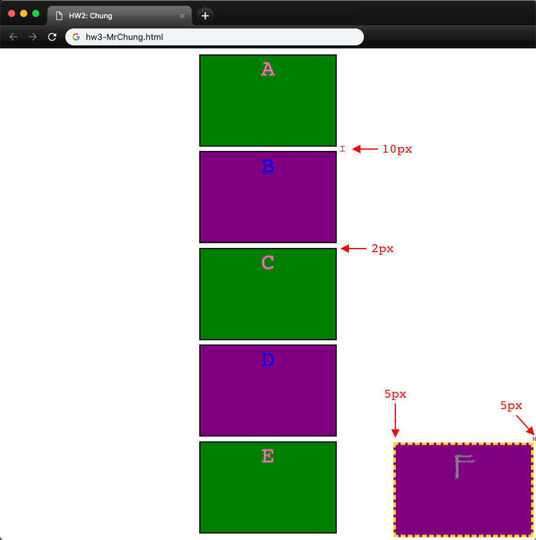

Due date
B1: Monday, April 8, 2:05 PM
B5: Monday, April 8, 8:30 AM
Deliverables
Starter code
No starter code for this assignment. Follow the directions given in the "Code" requirements.
Resources
Overview
This assignment is similar to the last one, but this time, you will be using a powerful CSS tool called
flex positioning.
Requirements
To receive full credit on this assignment, you must create a webpage that displays the following:

Notes on this image:
- There are a couple other small requirements, but they can only be seen in motion. Click here for a gif.
- The mouse should change to a pointer when hovering over any box
- The "odd" boxes should turn yellow when hovered over
- The "even" boxes should turn cyan when hovered over
- Again, the red lines/numbers are NOT part of the webpage. They are just there for reference.
- Most things have stayed the same since the last assignment. Here is a list of the changes:
- The boxes are now centered in the screen (obviously).
- All boxes (except the last) now have a 2-pixel wide, solid black border.
- The "even" boxes are now colored purple.
- The final box has a 5-pixel wide, dashed gold border.
- Each of the centered boxes are separated by a space of 10 pixels; the final box sticks to the same corner as before, but with 5 pixels of space separating it from the walls. These two attributes are listed together for a reason.
- Don't worry about the space at the top and bottom of the window. If you do everything else properly, those will figure themselves out.
Code
- Copy your entire HW2 folder, and change all folder and file names to reflect the fact that this is HW3.
- If your HW2 code is not usable, let Mr. Chung know, and he can get you a clean, complete copy of HW2 to start from.
- The HTML document title (the one that shows up in the browser tab) should be HW3: Lastname (substitute your last name)
- Carefully edit your existing code to match the new requirements.
- You are required to use flex positioning for full credit on this assignment.
Style
Your code will also be graded on style, as usual. Refer to the
Style Guidelines for details.
Organization
A small part of your grade will come from good file organization. Refer to the
Organization Guidelines for details.
Tips
Here are some helpful pointers for this assignment:
- There is only one small change to make to the HTML file. All other changes should happen inside the CSS file.
- Don't overcomplicate things with your CSS file. For reference, Mr. Chung deleted 2 lines, changed 1 line, and added 17 new lines.
- Think carefully about what are the most general changes you could make, before you start getting to the specifics. In other words, work on characteristics common to all of the boxes before you try to separate odd and even, etc.
- If you don't remember how to do something, review your code from class or ask questions!